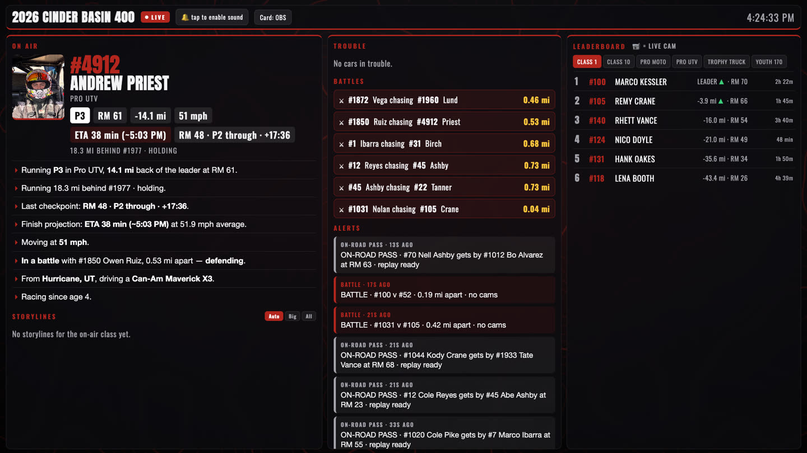
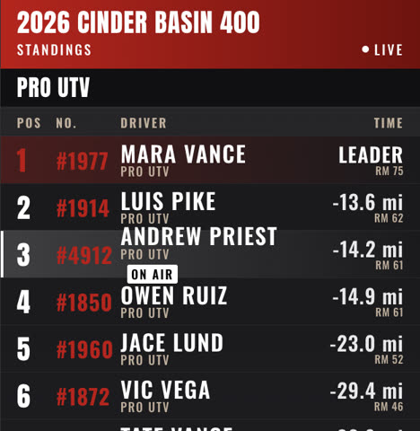
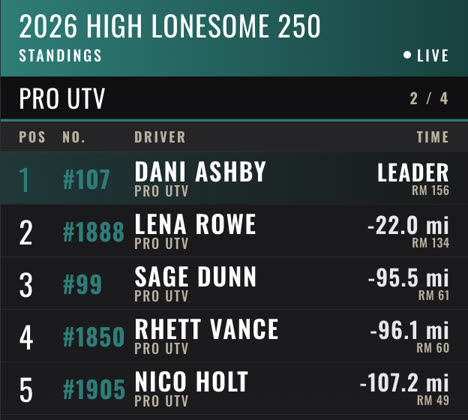
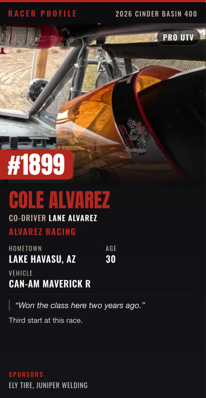

What's behind the show.
The cameras, the tracking, the booth dashboard and the graphics. You don't have to run any of it, but here's how it works.
Screens from our live system, running a sample race. The race and most racers are made up.
Every production is built around your race. No packages.
A 500-mile desert race and a short course need different coverage. We plan each show around your course, your schedule and your field, and quote it per race or per series.
What we can bring
Your racers rent the cameras. Nobody buys a box.
The hard part of in-car coverage is getting cameras into enough cars. We handle it: we bring a fleet of TRC TerraCast cameras, rent them to teams at tech, and put every feed into the show. Your teams don't have to buy anything.


The in-car camera teams rent from us at tech.
Installs in 60 seconds. Streams live video and reports the car's location the whole race. Your top racers get an in-car feed, whether or not they own a camera.
Bring your own camera.
Any common in-car stream plugs into the show with an SRT key.
TRC Telemetry puts RPM, throttle, speed and temperatures on screen for cars running it.
TerraCast cameras and TRC Telemetry are made by TRC. Teams that want to own one can buy from TRC. TRC products ↗
Race tracking drops out. So we bring our own.
Official tracking can drop out mid-race. Our map pulls from three sources at once, so when one drops, the others can keep it going.
Every TRC TerraCast.
Each camera reports its car's live location.
Every TRC Telemetry box.
Sends location over Starlink, along with the engine data.
The official tracking company.
We take in their data too, and build our custom live data from all three.
Your announcers see what viewers can't.
The booth has its own dashboard: every car's position, the gap to the car ahead, battles, splits and talking points. Our race control tool finds any racer by name and shows where they are on the map.
- 02:14Car 7, Alvarez, is eight seconds behind car 22 for the class lead at race mile 212.
- 02:14Alvarez broke an axle right here last year and didn't finish. Third start at this race.
- 02:19Car 31 has stopped at race mile 180. Team's been told. We'll show it when we have a picture.
Sample calls, made-up racers.

Racers sent us their story through registration before Baja Nevada 2026.
How often racer data syncs from a race's registration to the booth.
To find any racer by name and see where they are on the map.
We help the race org collect each racer's hometown, background, goals and sponsors when they register. The booth knows why a racer matters before they reach the screen.
It's your race, so the broadcast wears your brand.
Leaderboards, maps, lower thirds and racer cards are built in your colors and type. No brand guide? We build the look for your broadcast before race day.



The same standings board for two different races, and a racer card built from registration.
Tell us about your race or series.
One of us will reach out to plan the show with you and send a price.